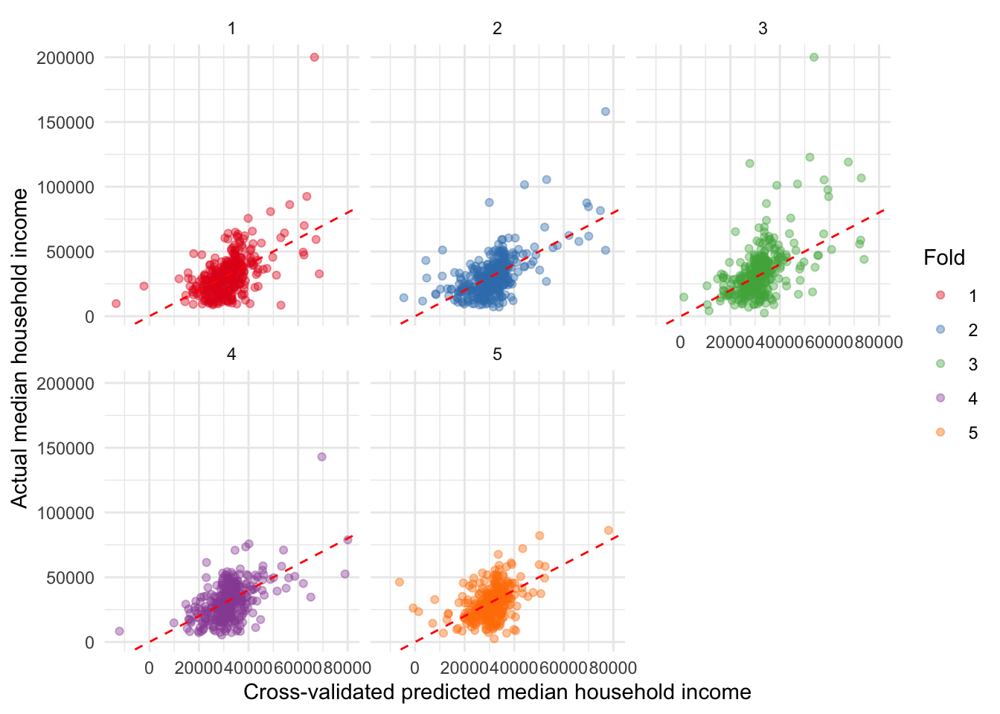

library(DAAG)
multregdata <- read.csv('RegressionData.csv')Lecture8
Log Transformations, Polynomial Regression, Cross-Validation
Review from last week
The \(F\) statistic in the regression output tests the \(H_0\) that none of the predictors do anything to predict the independent variable.
If \(p<0.05\), we reject \(H_0\) that at least one of the predictors is doing something to account for the variance in dependent variable \(y\).
Log Transformations
Sometimes it is possible to make a variable normal by subjecting it to some simple algebraic operations.
This sometimes helps when we deal with issues of non normality of residuals or non linear relationship between x and y.
- The logarithmic transformation of variable \(x\) is problematic when we have zero values. In that case, \(\text{ln}(x+1)\) may help.
The logarithmic transformation is the most widely used to achieve normality when the variable is positively skewed (tail on the right).
Analysis is then performed on the transformed variables.
Dependent variable only
Interpretation of the coefficient: as predictor \(x\) goes up by 1 unit, the expected change in our dependent variable \(y\) is \((e^{\beta_1} -1) * 100\%\)
When \(\beta_1\) is small, we can say that as x goes up by 1 unit, expected change in our dependent variable \(y\) is approximately \(100 * \beta_1\%\).
Independent variable only
A 1% increase in the independent variable is associated with a change in the dependent variable by \(\frac{\beta_1}{100}\) units.
Both dependent and independent variable
As \(x\) changes by 1%, \(y\) changes by \((1.01^{\beta_1}-1)*100\%\).
When \(\beta_1\) is small, we can use the approximation \(\beta_1\%\).
When \(\text{log}\) transformations aren’t helpful
There are a few situations where this is the case:
When you have a huge spike at 0, it won’t solve the non-normality issue.
When there’s a long tail on the left (a negatively-skewed distribution)
You could technically transpose the data to shift it, but the interpretation of the \(\beta\) coefficients are very complicated to interpret. If we’re sticking to the simplistic method of OLS regression, we might as well keep the output simplistic as well.
Residual plots and polynomial regression
The residuals \(\epsilon_1,\dots,\epsilon_n\) are a great method to check regression assumptions.
In a residual plot, you are looking for outliers, curvature, or changing variance.
Polynomial regression
To account for curvature, we can run a polynomial regression to fit a polynomial instead of a line.
The quadratic model is:
\[ y=\beta_0+\beta_1x+\beta_2x^2 + \epsilon \]
The cubic model is:
\[ y=\beta_0+\beta_1x+\beta_2x^2+\beta_3x^3+\epsilon \]
The higher the order of the polynomial, the more curvature it can account for. However, it’s best not to use a polynomial that is of higher order than 3. We should choose the lowest order polynomial possible.
\(p\)-values for selecting order
The regression output provides a more formal method for selecting the order of the polynomial. This method typically agrees with looking at the residual plot.
Look at the \(p\)-value for the highest order term (cubic or quadratic) in the regression output (e.g., fit the cubic model to start. If the cubic term is significant, use the cubic model. If the quadratic term is not significant, remove it and rerun the model assuming a linear regression).
What if the polynomial model doesn’t work?
We can try other methods, such as centering the variable or combining the polynomial regression with \(\text{log}\) transformations.
2 approaches to regression analysis
Theory-driven, traditional statistical approach
- Formulate a theory that the dependent variable is a function of one or more predictors.
- Test that theory by using the simple/multiple regression methods we described earlier, focusing more on the significance and effect size of each predictor than on the overall predictive ability of the model (e.g., \(R^2\))
Statistical learning/data-mining paradigm focusing on model’s predictive ability
With this framework, we care care more about how well the overall model firs the data and focus less on the contribution of each individual predictor.
Goal is to optimize quantities like \(R^2\) and RMSE, and not just for the data set at hand: we also want to assess the quality of prediction for unseen data.
Training and validation datasets
Imagine we have a dataset with 1000 observations and are trying to fit the models using this data set. But it’s only one dataset!
So, we randomly split the dataset in half. 500 as training, 500 as hold-outs to predict. We use this dataset to “train” the regression models.
For the first model, we then take the \(\beta\) coefficients that were estimated with the training dataset and compute the predicted value \(\hat{y_i}\) and the residual \(\epsilon\) for each observation \(i\) in the validation dataset. We then repeat this for the second model.
We then use the validation dataset to calculate a statistic known as the Root Mean Square Error for both models.
Root Mean Square Error (RMSE)
We get the RMSE by dividing the \(\text{SSE}\) by the number of observations \(n\) to first get the Mean Square Error (MSE). We then take the square root to get our RMSE:
\[ \text{RMSE}=\sqrt{\frac{\sum_{i=1}^n(y_i-\hat{y}_i)^2}{n}} = \sqrt{\frac{\sum_{i=1}^n\epsilon_i^2}{n}} \]
RMSE is an estimate of the magnitude of a typical residual.
Problems with RMSE
The RMSE will depend on the observations that end up being in the training and validation data sets.
- If we repeat the process of randomly splitting the sample set into two parts, we will get a somewhat different estimate for the RMSE each time, and that may affect the selection of the best model.
Only part of the observations (those which are included in the training dataset) are used for model fitting and parameter estimation. This is especially problematic if our initial dataset is already small
Potential solutions
Leave One Out Cross Validation
- Holds out one observation from the dataset, estimate its \(\hat{y}\) and \(\epsilon\) from the model, and then does the same thing for every single value from the dataset. The RMSE is then calculated.
\(k\)-fold Cross Validation
Quicker than LOOCV if you have a large sample size \(n\).
Involves randomly dividing the set of observations into \(k\) groups or “folds” of approximately equal size.
The 1st fold is treated as a validation dataset and the model is fitted on the remaining \(k-1\) folds.
Like with LOOCV, we then calculate the RMSE.
Overfitting
Even though a complicated model may do very well with modeling training data, the same model will likely be abysmal at modeling unseen data.
Practice in R
library(DAAG)
library(ggplot2)
fit <- lm(MEDHHINC ~ PCTVACANT + PCTSINGLES, data = multregdata)
cv <- CVlm(data = multregdata, fit, m = 5, plotit = FALSE, printit = FALSE)
cv_rmse <- sqrt(mean((cv$MEDHHINC - cv$cvpred)^2))
cv_mae <- mean(abs(cv$MEDHHINC - cv$cvpred))
cat("CV RMSE:", round(cv_rmse), "\nCV MAE: ", round(cv_mae), "\n")CV RMSE: 13677
CV MAE: 9540 mse <- attr(cv, "ms")
rmse <- sqrt(mse)
rmse[1] 13676.84ggplot(cv, aes(x = cvpred, y = MEDHHINC, color = factor(fold))) +
geom_point(alpha = 0.4) +
geom_abline(slope = 1, intercept = 0, color = "red", linetype = "dashed") +
facet_wrap(~ fold) +
scale_color_brewer(palette = "Set1", name = "Fold") +
labs(x = "Cross-validated predicted median household income", y = "Actual median household income") +
theme_minimal()